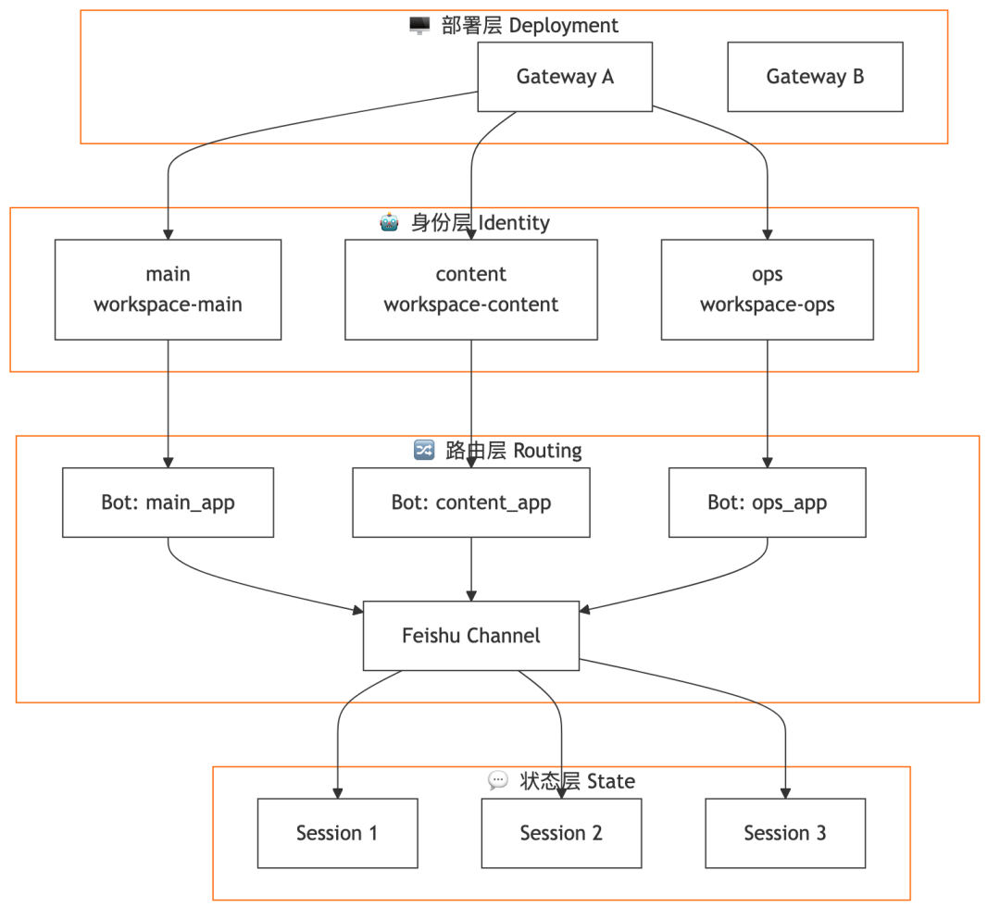
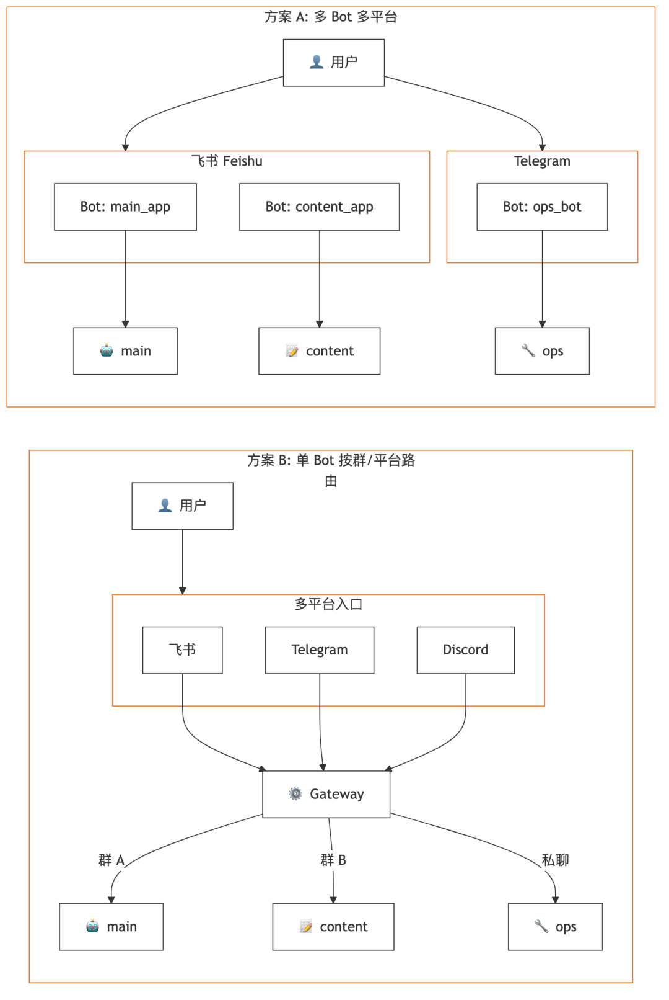
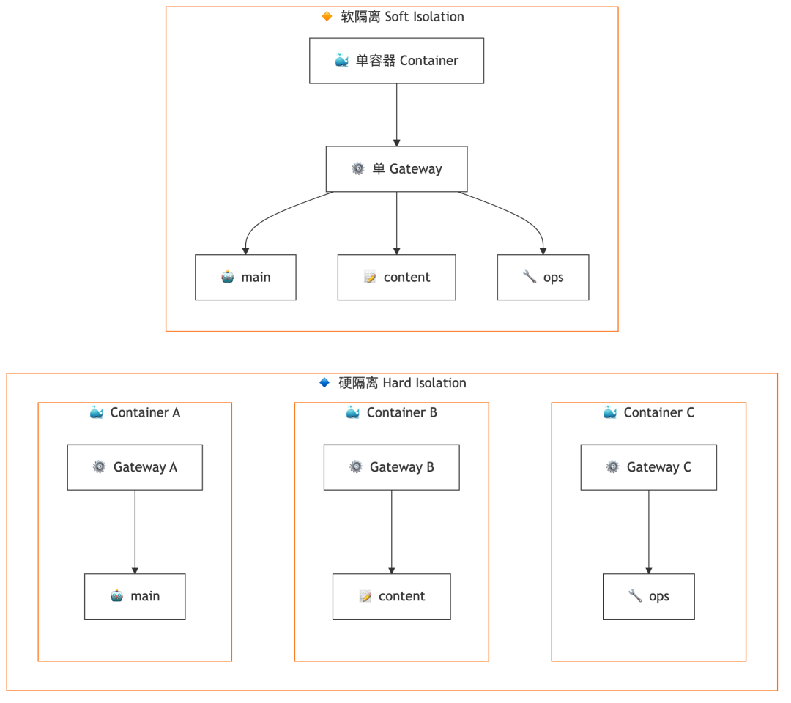
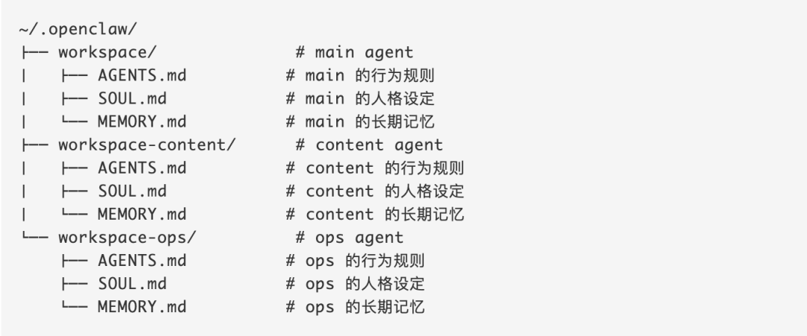
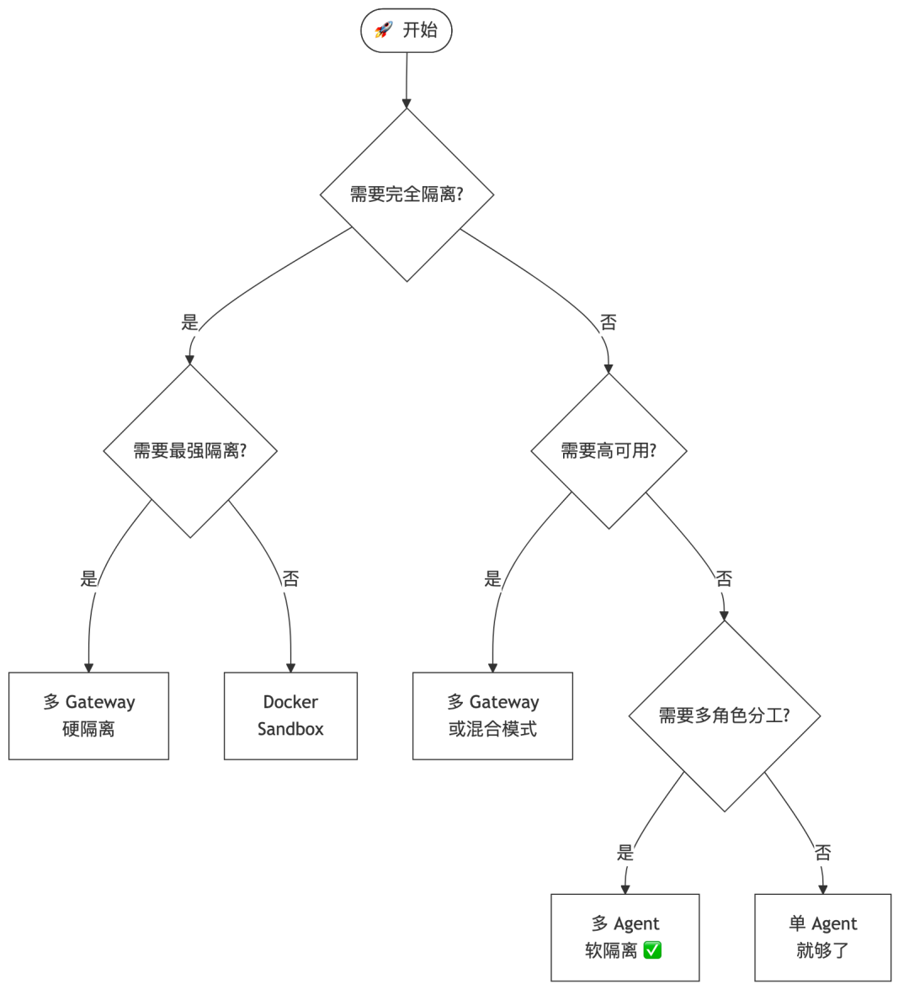

TL;DR
• Openclaw 支持从部署层、身份层、路由层和状态层去管理多 Agents
• 「单渠道多账户 + 软隔离」的核心优势是记忆隔离和上下文压缩效率
• 软隔离是「君子协议」，适合信任环境下的小团队
• 从单 Agent 到多 Agent 的演进是渐进的——先跑起来，遇到问题再拆分
最近很多人问我，在实际落地中，你们到底是怎么配置这些 agents 的？
今天详细分享一下我们的配置方案，以及踩过的坑。
一、为什么需要多 Agents？
当你开始频繁使用 Openclaw 之后，很快就会遇到上下文溢出、记忆错乱、性能太差等问题，这些都来自单 Agent 的架构瓶颈。
OpenClaw 的架构，支持我们从四个层面去管理多 agents：
• 部署层：agents 放在一个容器还是多个容器？ • 身份层：每个 agent 的能力边界和知识隔离 • 路由层：消息怎么分发到不同的 agent？ • 状态层：对话上下文和任务状态怎么管理？

OpenClaw 多 Agent 架构的四个层面
我们现在有 3 个 Agents。两个做不同的业务，另一个负责项目管理和调度。
但这种区分业务和管理的多 Agents 架构并不适合所有团队。
二、从单 Agent 开始的演进路径
我们现在的这套架构也是从单 Agent 开始，不断迭代过来的。
单 Agent 多 Sessions（起点）
单 Agent 多 Sessions 的配置非常适用一人公司。
它的好处是：
• 配置简单，开箱即用 • 记忆齐全，所有 sessions 共享知识 • 想区分不同的项目/业务类型，把它拉到不同群聊里就可以 • 可以 spawn sub-agents 来处理后台任务
单 Agent 的问题
但这种配置的问题也是最多的。
最大的问题是上下文管理——同一个 Agent，不论拆出多少 Sessions，本质上都是共享一个 workspace：
1. 记忆错乱：所有 sessions 共享同一个 MEMORY.md，一个 session 写入的内容会被其他 sessions 读取 2. 配置膨胀：当你在不同 session 给了它不同要求，它会把这些要求都写在一套很长的配置中 3. Token 消耗高：每次聊天，这套配置完整被注入 system prompt，导致打个招呼就要消耗 30k token 4. Compaction 阻塞：一个 session 的 compaction 运行时，其他 sessions 会被阻塞
所以我们很快就开始去做 agents 的拆分了。
三、多 Agents 的两个核心决策
OpenClaw 本身就支持配置多 agents，除了 Agent 本身的设定之外，还支持不同的路由策略和部署策略。
路由策略
路由策略决定咱们将如何与这些 agents 交互：
• 单渠道单账户：一个机器人服务所有 agent，最简单，但无法区分身份 • 单渠道多账户：多个机器人，每个对应一个 agent，身份清晰 • 多渠道：不同平台用不同 agent，适合跨平台场景

三种路由策略对比
部署策略
部署策略决定最后配出来这些 agents 之间的隔离程度：

软隔离 vs 硬隔离
四、我们的配置方案：单渠道多账户 + 软隔离
我们现在的配置是：单渠道多账户 + 软隔离的方案。
为什么这样选？
• 做单渠道：因为我们和客户几乎都用飞书来协作 • 多账户：因为我们要给不同的 Agent 配不同的飞书应用权限 • 做软隔离：把多个 agents 放在同一个容器和同一个 Gateway 里，只是将他们各自的 Workspace 独立开
Workspace 目录结构

软隔离的好处
1. 记忆不会串：每个 agent 有独立的 workspace 和 MEMORY.md 2. 上下文压缩效率更高：每个 agent 的 system prompt 只包含自己的配置文件 3. 协作方便：在同一个 Gateway 中，agents 之间可以通过工具通信 4. 资源效率高：共享一个进程，不需要为每个 agent 单独分配容器资源
五、软隔离的问题和风险
当然，现在这种配置是有很多问题的。
安全隐患：君子协议
软隔离本身是一种君子协议。
多个 Agents 只要在同一个容器中，都可以相互访问其他 Agent 的工作路径。只要通过很简单的 jail-breaking 的提示词，就可以让一个 agent 看到另一个 agent 与其他人的工作记忆。
虽然在同一个团队里，大家不会故意这么干，但这个隐患是存在的。
工程问题
• 单点故障：同个 gateway 一旦发生单点故障，所有的 Agent 都不可用了 • 资源竞争：多个 Agent 在同一个环境下会形成资源竞争，共用一套 CPU 和内存
六、其他可选方案
多 Agent 共享单 Bot（按群路由）
如果你不想创建多个飞书应用，可以用这种方案：多个 Agent 共享同一个机器人，通过 binding 规则按群 ID 路由到不同的 Agent。
用户只需要记住一个机器人，但在不同群里实际上是不同的 Agent 在服务。
Docker Sandbox（更强隔离）
如果需要处理敏感数据，可以启用 Docker Sandbox。这样每个 agent 的工具执行都在独立容器内，文件系统和进程完全隔离。
多 Gateway（最强隔离）
对于企业级部署，可以运行多个独立的 Gateway。完全的进程隔离，一个崩溃不影响其他。
七、配置选择决策树
不知道该选哪种配置？可以参考这个决策树：

配置选择决策树
写在最后
所以说，现在这种软隔离方案，肯定不是我们的最终形态。
从单 Agent 到多 Agent 的演进是渐进的。我们的建议是：先跑起来，遇到问题再拆分。不要一开始就做复杂配置，那样反而会增加维护成本。
随着更多的磨合和尝试，希望之后能跟大家分享更好的多 agents 架构和配置方案。
我是 VA7，base 深圳的 AI+跨境创业者，如果你也在研究 agents 或相关领域，欢迎多多交流。
📚 资源汇总
我让我的 Agent 写了一份很详细的配置指南，只要你发给你的 OpenClaw，它就会自动给出配置建议。
获取方式：评论区回复「配置指南」
扫码添加微信，一起聊 AI+跨境